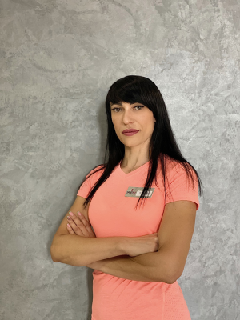
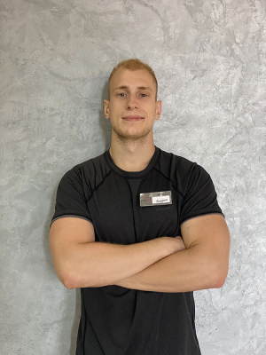
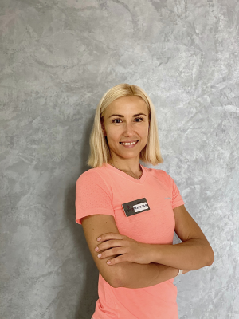
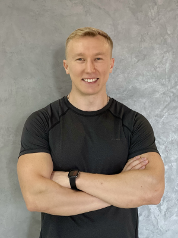
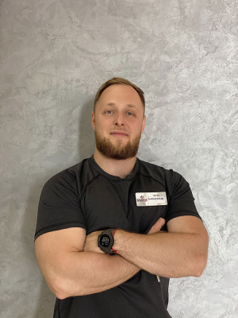
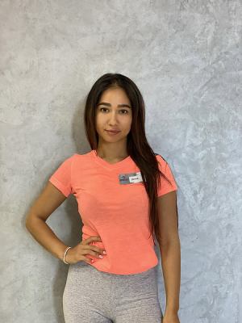
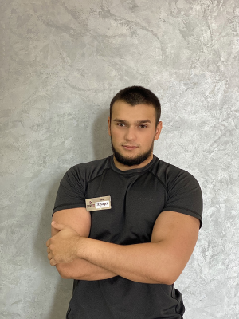
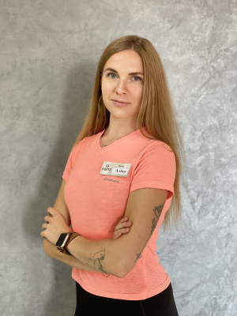
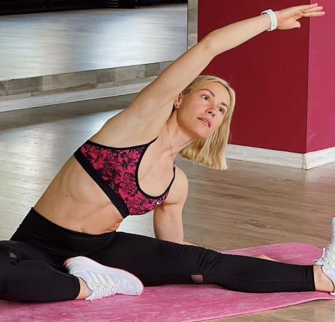
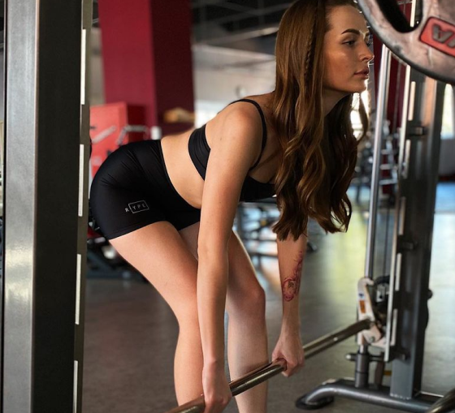

EQUIPE DE TREINADORES

TETIANE SHAPOVALOVA

ANDRIY POPOVYCH

NATALIA GORDIENKO

SERGHIY KLAP

SIMERYAGA ALEXANDER

ISKANDOROVA DILNURA

COMPRE EDUARD

POLIEVA ALINA
QUE ERROS DEVEM EVITAR DURANTE O TREINAMENTO DE IMPRENSA?
Concentre-se apenas no treinamento. Quando os braços e as pernas estão normais e a gordura se acumula na cintura e no abdômen, isso pode indicar distúrbios endócrinos, e não o fato de você precisar fazer mais exercícios abdominais. Neste caso, os exercícios por si só não vão ajudar. Em primeiro lugar, é importante prestar atenção à saúde e, talvez, depois disso, a questão de como inflar a imprensa não surja mais.
Leia Mais...

